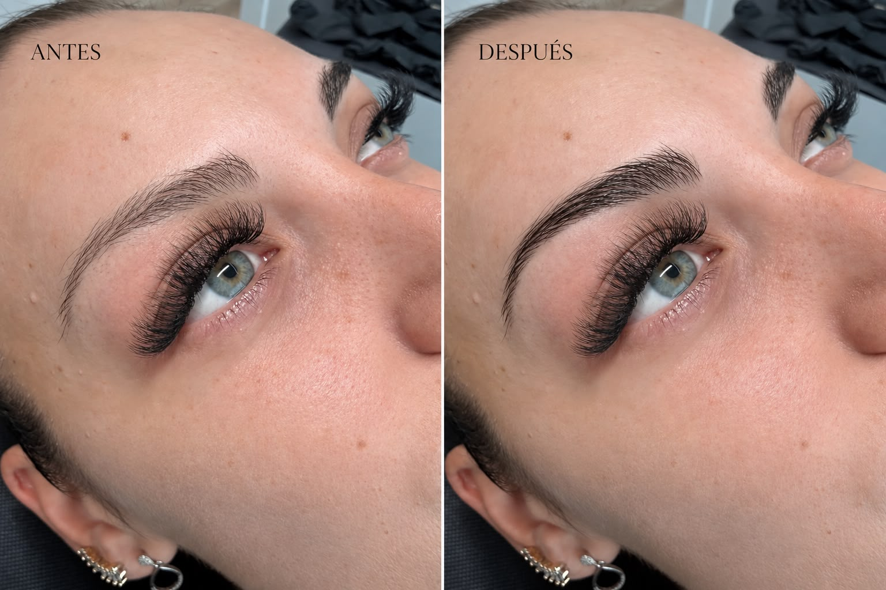
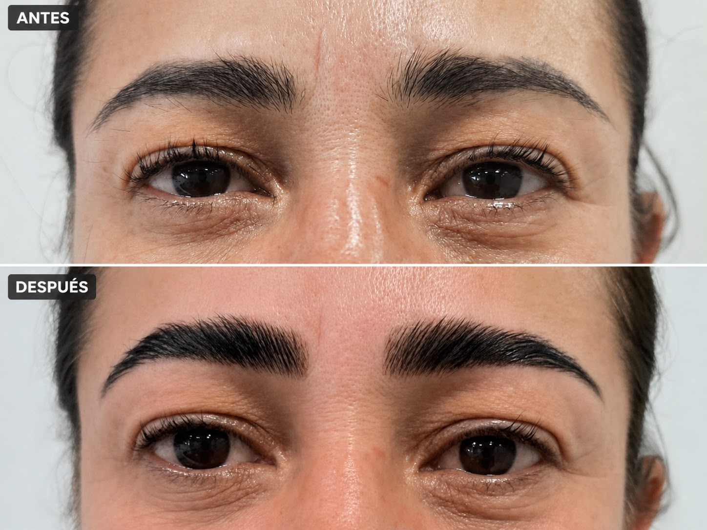

Diseño · Laminado · Tinte · Granollers
Natural Brow en Granollers: diseño, laminado y tinte de cejas
Cejas más ordenadas y definidas trabajando tu propio pelo, sin micropigmentación. Personalizamos el diseño, la dirección y el tono después de valorar tus facciones y el resultado que buscas.
55 € · cita de aproximadamente 1 hora. Valoración gratuita antes de elegir el acabado.

Qué es Natural Brow
Tus cejas, mejor dirigidas y definidas.
No todas las cejas necesitan pigmento. Cuando existe pelo suficiente, podemos mejorar visualmente la forma mediante un diseño preciso, orientar el crecimiento con laminado y aportar definición con coloración.
¿Quieres saber si encaja contigo?
- Tienes pelo, pero crece desordenado o hacia abajo.
- Buscas definición sin un procedimiento semipermanente.
- Quieres ver un cambio real antes de valorar micropigmentación.

Caso real · Granollers
Diseño que respeta el crecimiento y abre la mirada.Resultado realizado por Nohuska Beauty Lab
Nuevo caso real · Nohuska Brow
Natural Brow antes y después.

Natural Brow · combinación personalizada
Cómo trabajamos el laminado y tinte de cejas
En Nohuska, el laminado o Brow Lift forma parte de Natural Brow. La dirección del pelo y el tono se eligen contigo; no buscamos la misma ceja peinada hacia arriba en todos los rostros.
Atendemos en Granollers a clientas del Vallès Oriental, entre ellas Canovelles, Cardedeu, La Garriga, Llinars, La Roca y Lliçà de Vall. La cita se realiza en Avinguda Sant Esteve, 40.
Qué puede cambiar el laminado y qué no
El laminado trabaja el pelo existente: puede ordenarlo y aprovechar visualmente su densidad, pero no crea pelo nuevo ni rellena por sí solo una zona sin vello. El tinte aporta definición temporal; no es micropigmentación.
Si no sabes qué opción elegir, envía una foto actual sin maquillaje y con luz natural. La confirmación se hace en persona, observando el pelo y la piel.
Elige según lo que necesitas
- Limpiar la forma: puedes pedir diseño y depilación sin laminado.
- Ordenar pelo y definir tono: valora Natural Brow.
- Completar visualmente zonas sin pelo: consulta por separado los límites de la micropigmentación de cejas.
Preguntas sobre Nohuska Natural Brow
¿Qué incluye Nohuska Natural Brow?
Incluye un estudio de la forma y el pelo natural y, según la valoración, diseño, laminado y coloración de cejas.
¿Es micropigmentación?
No. Es un tratamiento no permanente que trabaja el pelo existente. Si hay zonas sin densidad, valoramos por separado si conviene micropigmentación.
¿Se puede combinar laminado y tinte?
Sí, cuando ambas técnicas encajan con el pelo y el resultado buscado. El laminado orienta el pelo y el tinte aporta definición temporal.
¿Cuánto dura la cita de Natural Brow?
La cita dura aproximadamente 1 hora. Este tiempo corresponde a la sesión, no a la duración del efecto del laminado o del tinte.
¿Cuánto cuesta Natural Brow?
La tarifa de referencia de Natural Brow es de 55 €. La valoración permite confirmar que el diseño, laminado y coloración recomendados encajan con tu ceja.
¿Dónde se realiza?
En Nohuska Beauty Lab, Avinguda Sant Esteve, 40, 08402 Granollers, con cita previa.
¿La valoración es gratuita?
Sí. Revisamos el pelo, la forma y el efecto que buscas antes de elegir la combinación de técnicas.
Más opciones para tus cejas
Preparación y mantenimiento
Qué contarnos antes de tu Natural Brow.
Indica si te has realizado laminado, tinte u otros tratamientos de cejas recientemente y si has tenido sensibilidad con algún producto. Si nos envías una fotografía para orientarte, hazla con luz natural y sin maquillaje de cejas.
Cómo organizar el cuidado después
Antes de irte, consulta cómo peinar la ceja, qué productos puedes utilizar y cuándo retomar tu rutina habitual. Las pautas y el momento de repetir el servicio dependen del tratamiento aplicado y del estado del pelo; confirma estas indicaciones con el equipo.
Para valorar el acabado, puedes revisar el caso real autorizado de Natural Brow. La fotografía muestra forma y dirección del pelo; no demuestra cuánto durará el efecto en otra persona.
Consulta tu cita de Natural Brow.
Indícanos qué días te van bien y qué te gustaría mejorar. Confirmaremos contigo el tratamiento, la tarifa y el horario; abrir WhatsApp no reserva una cita automáticamente.